Piezas de carrocería para Suzuki en Panamá
149 piezas disponibles hoy, cada una con su foto y su código: lámparas traseras (17), defensas delanteras (17), parrillas (16), defensas traseras (16).
- Garantía de 3 días
- Foto real de cada pieza
- Efectivo, Yappy o ACH
- Lunes a sábado, 8:00 a. m. a 5:00 p. m.
Por modelo
Swift 31Vitara 29Baleno 20Ertiga 17Jimny 11Ciaz 9Grand Vitara 8Swift Dzire 7Fronx 6APV 6S-Presso 5Alto 4XL7 3Dzire 3
Lámparas traseras para Suzuki 17
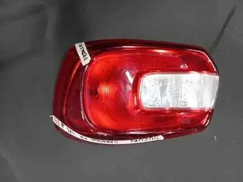
316S-Presso2020-26 · lado derecho · original 317Ciaz2015-20 · lado derecho · original nuevo
317Ciaz2015-20 · lado derecho · original nuevo 318Ertiga2019 · lado izquierdo · original
318Ertiga2019 · lado izquierdo · original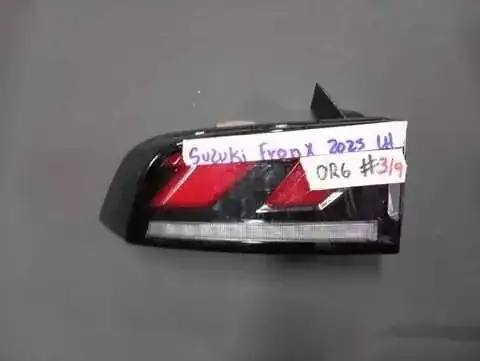
319Fronx2023 · lado izquierdo · original321Ertiga2019-23 · lado izquierdo · original nuevo 322Baleno2019-22 · lado derecho · original
322Baleno2019-22 · lado derecho · original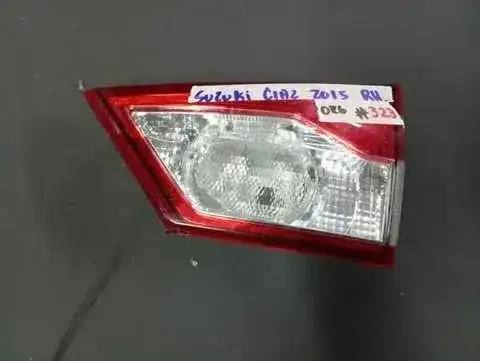
323Ciaz2015 · lado derecho · original 324Swift Dzire2019 · lado izquierdo · original
324Swift Dzire2019 · lado izquierdo · original 325Ignis2016-2020 · lado derecho · original
325Ignis2016-2020 · lado derecho · original 326Ertiga2019-23 · lado izquierdo · original
326Ertiga2019-23 · lado izquierdo · original 327Fronx2023 · lado izquierdo · original
327Fronx2023 · lado izquierdo · original 328APV2005-2014 · lado derecho · genérico
328APV2005-2014 · lado derecho · genérico 329Ertiga2019-26 · lado izquierdo · original
329Ertiga2019-26 · lado izquierdo · original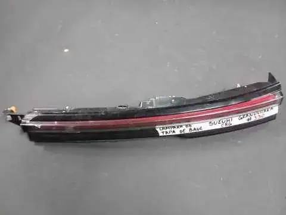
330Grand Vitara2022-26 · lado derecho · original 331Grand Vitara2022-26 · lado izquierdo · original
331Grand Vitara2022-26 · lado izquierdo · original LT001Ciaz2015-18 · lado izquierdo · original
LT001Ciaz2015-18 · lado izquierdo · original LT008Grand Vitara2022-26 · lado izquierdo · original
LT008Grand Vitara2022-26 · lado izquierdo · originalDefensas delanteras para Suzuki 17
 876Jimny2013-16 · original
876Jimny2013-16 · original 884Vitara2016-22 · original
884Vitara2016-22 · original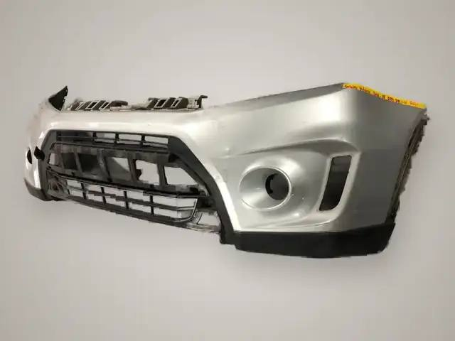
885Vitara2016-22 · original 888APV2005-17 · original
888APV2005-17 · original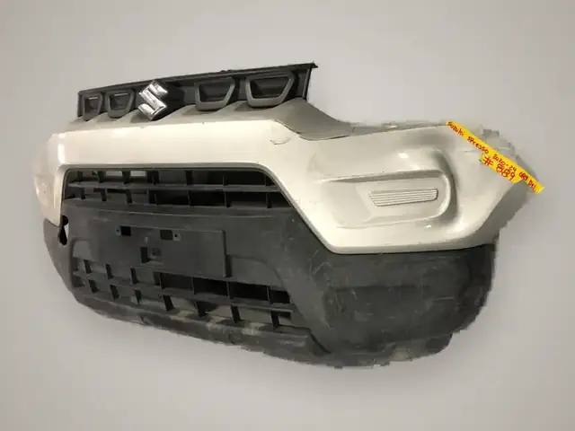
889S-Presso2022-24 · original 890Swift2016-21 · original
890Swift2016-21 · original 891Swift Dzire2022 · original
891Swift Dzire2022 · original 893Vitara2018-22 · original
893Vitara2018-22 · original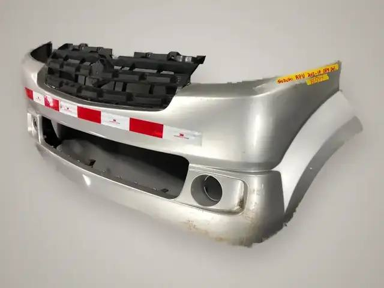
894APV2012-13 · original 895Swift Dzire2017-21 · original
895Swift Dzire2017-21 · original 932Alto2006-10 · original
932Alto2006-10 · original DD002Vitara2016-22 · original
DD002Vitara2016-22 · original DD007Grand Vitara2017-20 · genérico nuevo
DD007Grand Vitara2017-20 · genérico nuevo DD012S-Presso2022 · original
DD012S-Presso2022 · original DD013Jimny2019-25 · original
DD013Jimny2019-25 · original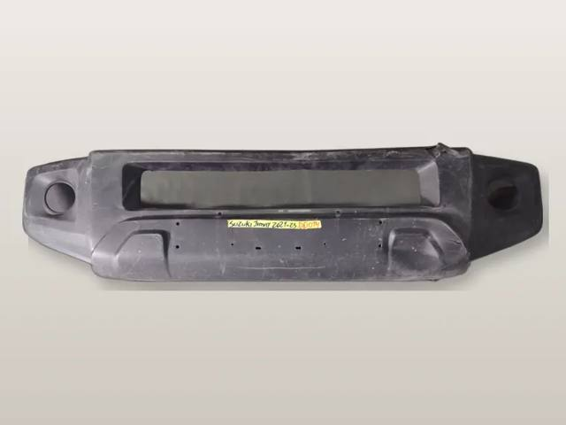
DD014Jimny2019-25 · original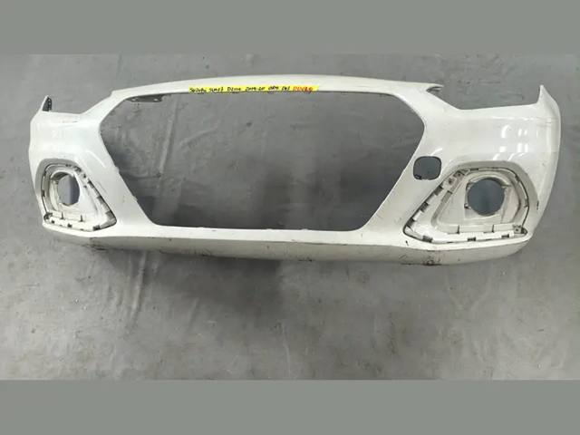
DD020Swift Dzire2019-20 · originalParrillas para Suzuki 16
 509Ciaz2020 · original
509Ciaz2020 · original 510Alto2016 · original
510Alto2016 · original 511Jimny2023 · original
511Jimny2023 · original 512S-Cross2020 · original
512S-Cross2020 · original 513Ertiga XL72023 · original
513Ertiga XL72023 · original 514Ertiga2015-18 · original nuevo
514Ertiga2015-18 · original nuevo 515Ertiga2017 · original nuevo
515Ertiga2017 · original nuevo 516Baleno2023-26 · original
516Baleno2023-26 · original 517Baleno2023-26 · original
517Baleno2023-26 · original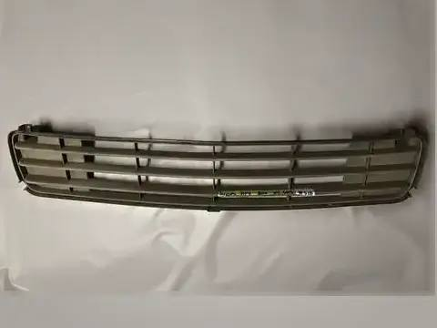
518APV2010 · original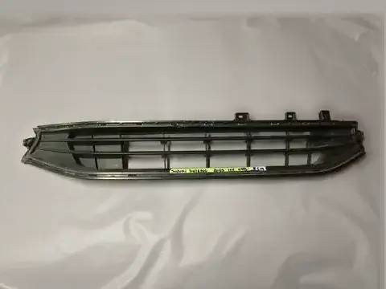
519Baleno2023-26 · original 520Baleno2019-22 · original
520Baleno2019-22 · original 521Baleno2019-22 · original
521Baleno2019-22 · original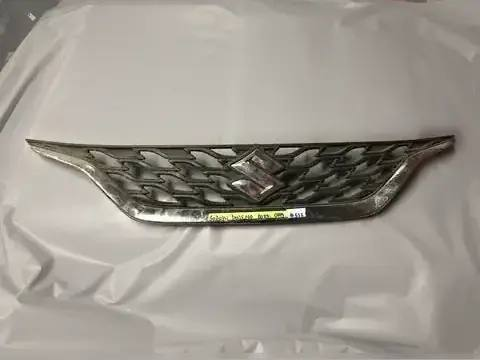
522Baleno2023-26 · original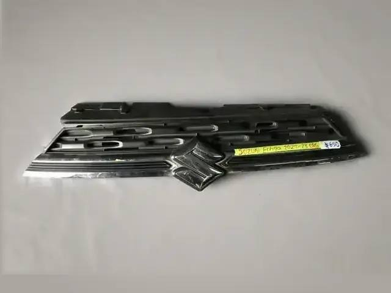
650Ertiga XL72021-24 · original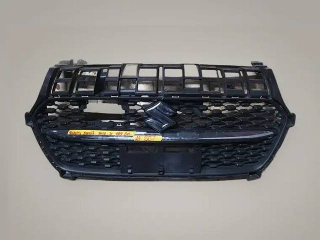
887Swift2018-21 · originalDefensas traseras para Suzuki 16
 DT102Swift2018-20 · original
DT102Swift2018-20 · original DT103Swift2018-22 · original
DT103Swift2018-22 · original DT104Swift2018-24 · original
DT104Swift2018-24 · original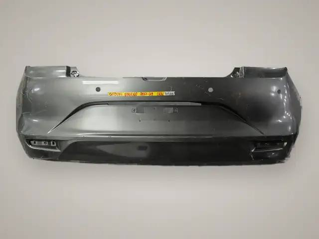
DT105Baleno2017-22 · original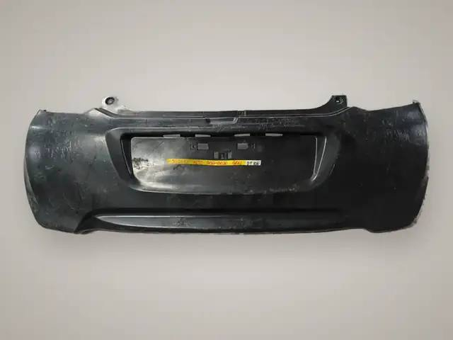
DT106Alto2012-20 · genérico DT107Swift2018-20 · original
DT107Swift2018-20 · original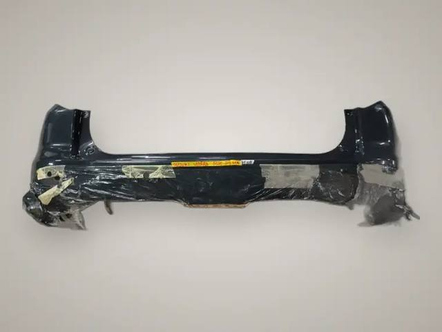
DT108Vitara2019-26 · original nuevo DT109Grand Vitara2013-17 · original
DT109Grand Vitara2013-17 · original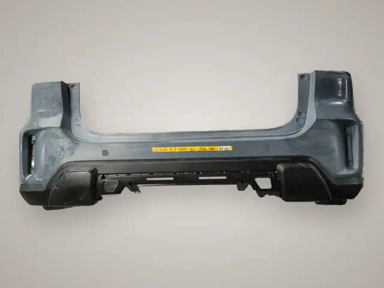
DT110XL72023-26 · original nuevo DT111Vitara2019-26 · original
DT111Vitara2019-26 · original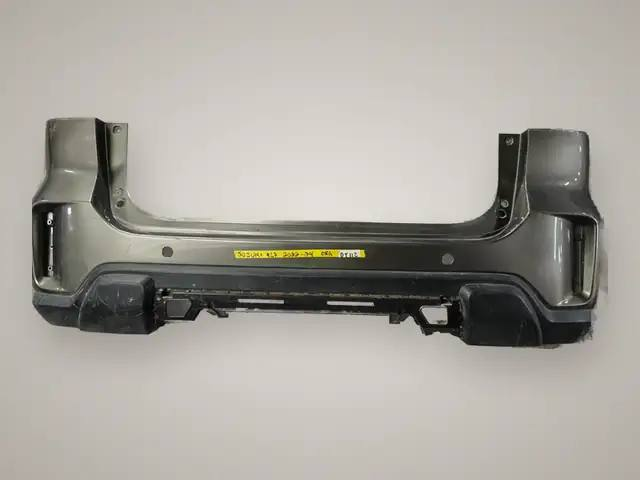
DT112XL72022-24 · original DT113Vitara2015-18 · original
DT113Vitara2015-18 · original DT114Vitara2015-18 · original
DT114Vitara2015-18 · original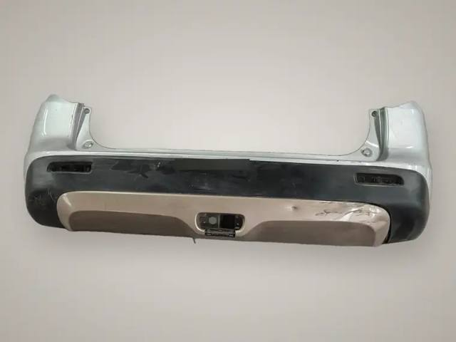
DT221Vitara2017-21 · original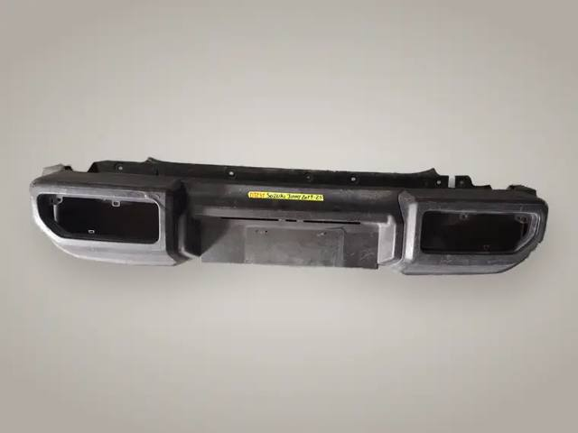
DT231Jimny2019-25 DT233Jimny2018-24 · original
DT233Jimny2018-24 · originalGuardafangos para Suzuki 15
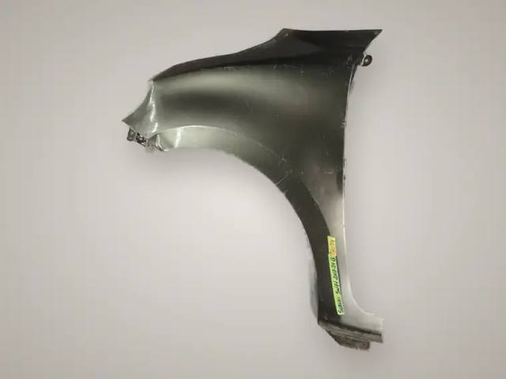
GF074Swift2017-2024 · lado izquierdo · original GF075S-Presso2020 · lado izquierdo · original
GF075S-Presso2020 · lado izquierdo · original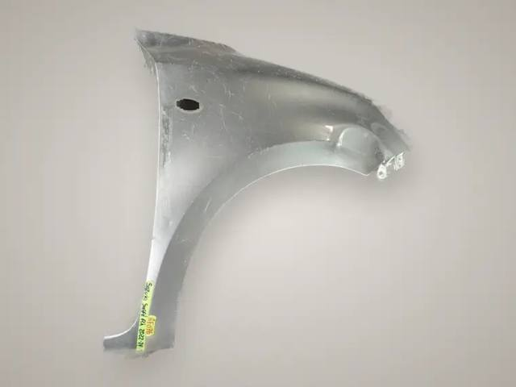
GF076Swift2021-24 · lado derecho · original GF077Swift2018-20 · lado derecho · original
GF077Swift2018-20 · lado derecho · original GF078Vitara2019-26 · lado izquierdo · original
GF078Vitara2019-26 · lado izquierdo · original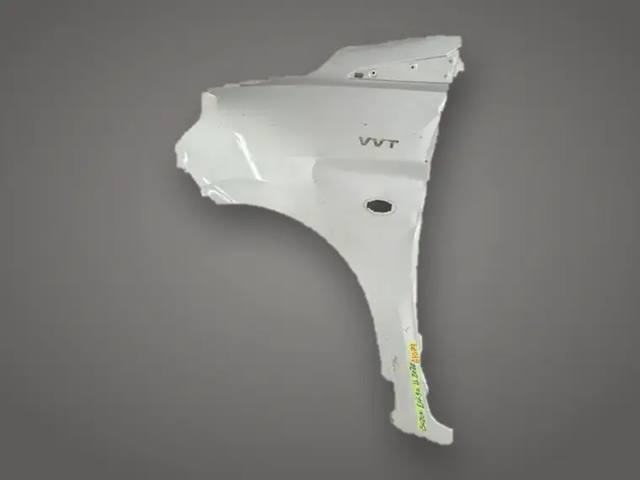
GF079Ertiga2020 · lado izquierdo · original GF080Swift2017-2024 · lado derecho · original
GF080Swift2017-2024 · lado derecho · original GF081Vitara2019-26 · lado derecho · original
GF081Vitara2019-26 · lado derecho · original GF082Ertiga2020 · lado derecho · original
GF082Ertiga2020 · lado derecho · original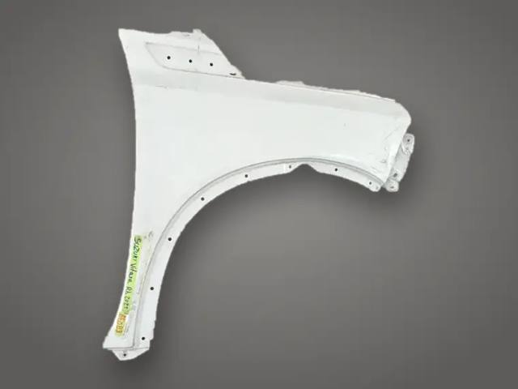
GF083Vitara2019-26 · lado derecho · original GF114Swift2017-2021 · lado izquierdo · original
GF114Swift2017-2021 · lado izquierdo · original GF134Vitara2019-26 · lado izquierdo · genérico
GF134Vitara2019-26 · lado izquierdo · genérico GF135Baleno2016-2022 · lado izquierdo · genérico
GF135Baleno2016-2022 · lado izquierdo · genérico GF141APV2005-2008 · lado izquierdo · genérico
GF141APV2005-2008 · lado izquierdo · genérico GF142Jimny2021-2023 · lado derecho · genérico
GF142Jimny2021-2023 · lado derecho · genéricoFaros y lámparas delanteras para Suzuki 14
 102Swift2017 · lado derecho · original
102Swift2017 · lado derecho · original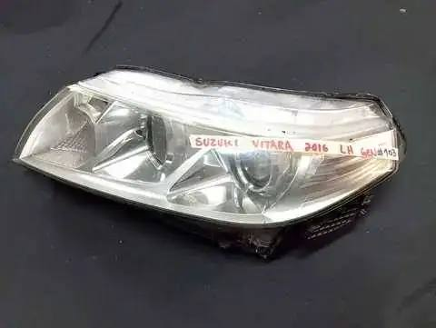
103Vitara2015-18 · lado izquierdo · genérico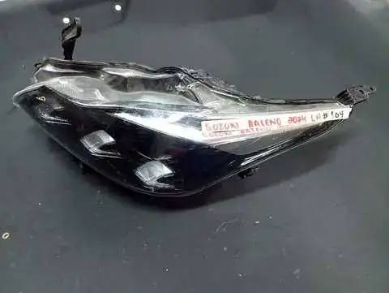
104Baleno2023-26 · lado izquierdo · original 105Vitara2006-14 · lado derecho · original
105Vitara2006-14 · lado derecho · original 106Swift2017 · lado derecho · original
106Swift2017 · lado derecho · original 108Jimny Full LED2024 · lado derecho · original
108Jimny Full LED2024 · lado derecho · original 110Fronx2025 · lado derecho · original
110Fronx2025 · lado derecho · original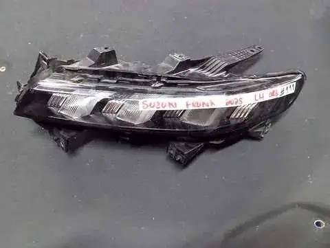
111Fronx2025 · lado izquierdo · original 112Grand Vitara2025 · lado izquierdo · original
112Grand Vitara2025 · lado izquierdo · original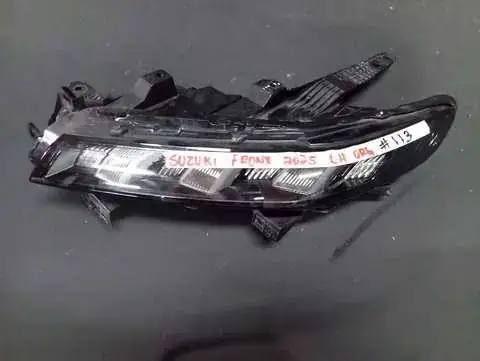
113Fronx2025 · lado izquierdo · original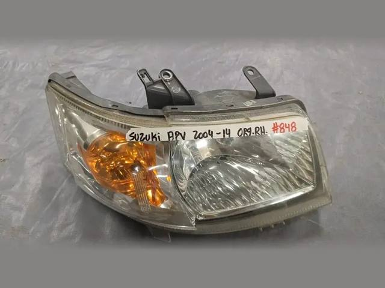
848APV2004-14 · lado derecho · original 855Vitara2016-20 · lado derecho · genéricoLD055A-Cross2026-27 · lado derecho · original
855Vitara2016-20 · lado derecho · genéricoLD055A-Cross2026-27 · lado derecho · original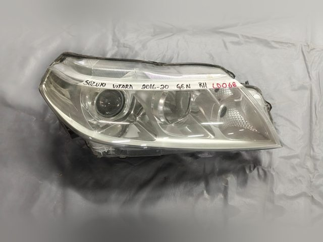
LD068Vitara2016-20 · lado derecho · genéricoHalógenas y faros antiniebla para Suzuki 8
 HA086Dzire2019-20
HA086Dzire2019-20 HA112Dzire2019-20
HA112Dzire2019-20 HA084Baleno2019-22
HA084Baleno2019-22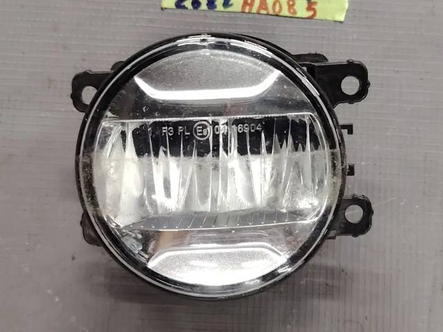
HA085Baleno2019-22 HA090Baleno / Swift2018-24 · lado derecho
HA090Baleno / Swift2018-24 · lado derecho HA093Baleno2018-24 · lado derecho
HA093Baleno2018-24 · lado derecho HA094Vitara2015-21 · lado izquierdo
HA094Vitara2015-21 · lado izquierdo HA114Jimny2023 · lado izquierdo · original
HA114Jimny2023 · lado izquierdo · originalPuertas para Suzuki 7
 PD021Vitara2015-26 · lado derecho · original
PD021Vitara2015-26 · lado derecho · original PT048Alto2009-2011 · lado derecho · original
PT048Alto2009-2011 · lado derecho · original PT047Swift2008-2011 · lado izquierdo · original
PT047Swift2008-2011 · lado izquierdo · original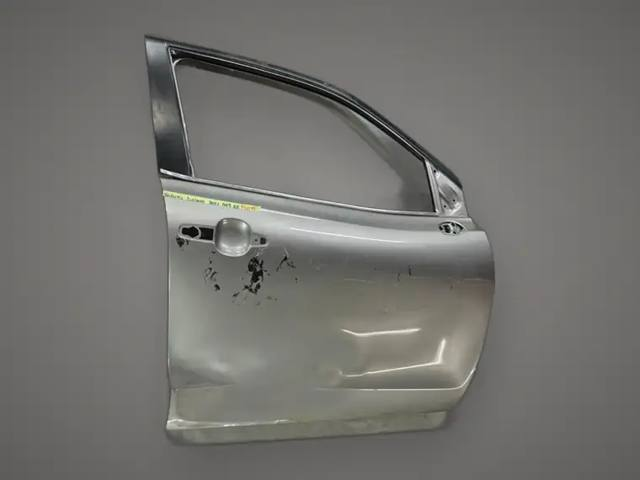
PD019Baleno2016-22 · lado derecho · original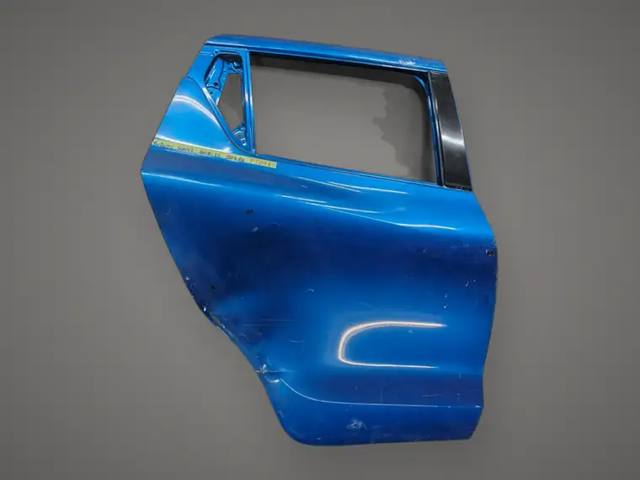
PT046Swift2018-24 · lado derecho · original PT044Baleno2016-22 · lado derecho · original
PT044Baleno2016-22 · lado derecho · original PT043Vitara2015-26 · lado derecho · original
PT043Vitara2015-26 · lado derecho · originalCovers de halógena para Suzuki 7
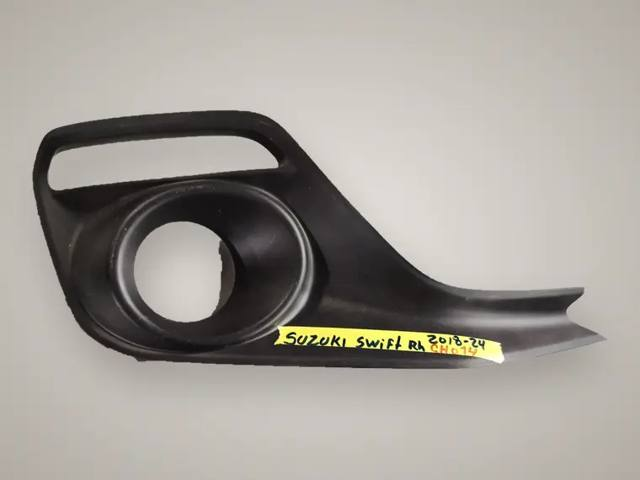
CH014Swift2018-24 · lado derecho · original nuevo CH056Ciaz2015-23 · lado izquierdo
CH056Ciaz2015-23 · lado izquierdo CH057Ciaz2015-23 · lado izquierdo
CH057Ciaz2015-23 · lado izquierdo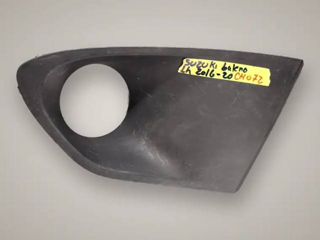
CH072Baleno2016-20 · lado izquierdo CH078Swift2007-10 · lado derecho
CH078Swift2007-10 · lado derecho CH122Swift Dzire2019-23 · lado izquierdo
CH122Swift Dzire2019-23 · lado izquierdo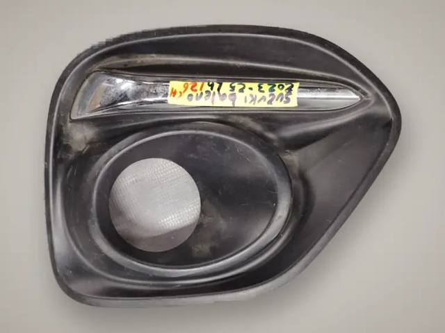
CH126Baleno2023-26 · lado izquierdoFlares para Suzuki 4
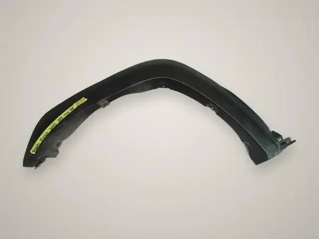
FL004Jimny2025 · lado derecho · original FL099Vitara2015-18 · lado izquierdo · original
FL099Vitara2015-18 · lado izquierdo · original FL105Vitara2015-23 · lado izquierdo · original
FL105Vitara2015-23 · lado izquierdo · original FL107Grand Vitara2024-25 · lado derecho · original
FL107Grand Vitara2024-25 · lado derecho · originalRetrovisores para Suzuki 4
 RV001Ciaz2016-20 · lado derecho · original
RV001Ciaz2016-20 · lado derecho · original RV002Ertiga2018-23 · lado derecho · original
RV002Ertiga2018-23 · lado derecho · original RV019Ertiga / Swift2018-24 · lado derecho
RV019Ertiga / Swift2018-24 · lado derecho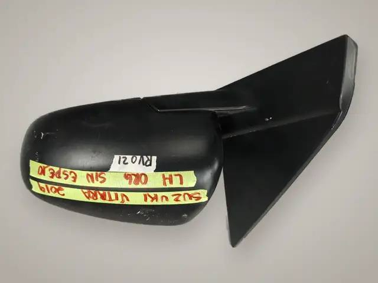
RV021Vitara2019-26 · lado izquierdo · originalCapós para Suzuki 4
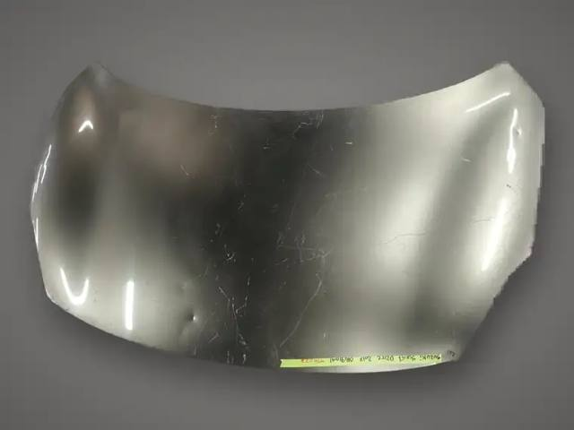
TM022Swift Dzire2017 · original TM034Baleno2016-24 · original
TM034Baleno2016-24 · original TM063Vitara2016-20 · original
TM063Vitara2016-20 · original TM070Vitara2015-22 · original
TM070Vitara2015-22 · originalVidrios para Suzuki 4
 VA002Ertiga2012-18 · original
VA002Ertiga2012-18 · original VA006Grand Vitara2001-08 · original
VA006Grand Vitara2001-08 · original VA032Ertiga2012-18 · genérico
VA032Ertiga2012-18 · genérico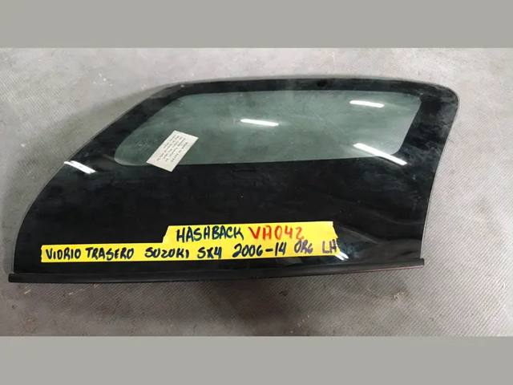
VA042SX42006-14 · lado izquierdo · originalCubrepolvos para Suzuki 3
 CP048Vitara2015-26 · lado derecho · original
CP048Vitara2015-26 · lado derecho · original CP064S-Presso2021 · lado izquierdo · original
CP064S-Presso2021 · lado izquierdo · original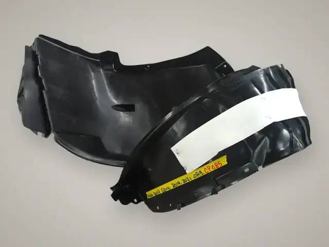
CP088Swift Dzire2019-2021 · originalDepósitos de agua para Suzuki 3
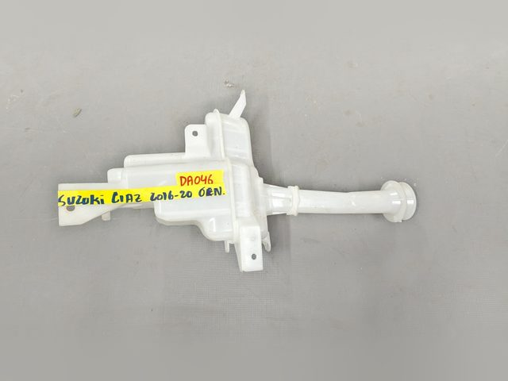
DA046Ciaz2016-20 · original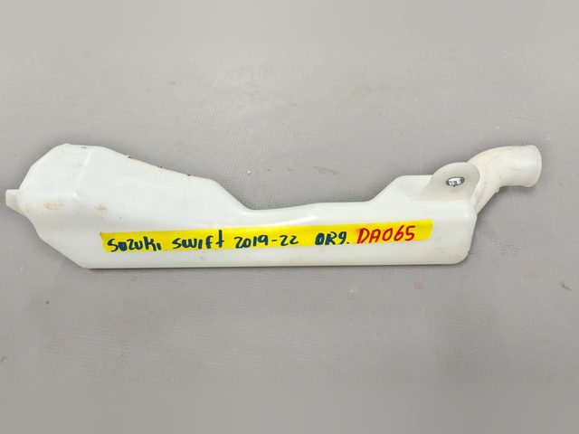
DA065Swift2019-22 · original DA031Ciaz / Swift2000-15
DA031Ciaz / Swift2000-15Tapas de baúl para Suzuki 2
Molduras traseras para Suzuki 2
 MLT016Vitara
MLT016Vitara MLT021Ertiga
MLT021ErtigaProtectores inferiores para Suzuki 2
 PCh006Swift
PCh006Swift PCh007Swift
PCh007SwiftEstribos y rolling boards para Suzuki 1
 RB051Jimny
RB051JimnyVentiladores para Suzuki 1
Guardafangos traseros para Suzuki 1
Tableros para Suzuki 1
Otras marcas
ToyotaKIAHyundaiNissanHondaGACBMWMitsubishiFordMercedes-BenzMazdaChevroletForthingJeepIsuzuVolkswagenBYDCheryAudiLexusMiniRAMFiatMaxusJaecooLincolnDodgeDFSKMGChanganSubaruPorscheDongfengPeugeotLand RoverAcuraInfinitiHavalOmodaDaewooGeelyGwmVolvoJMCUniversalHinoJACGMCOpelCadillacScionRenaultKaiyiDaihatsuKarryInternationalJaguarFaw